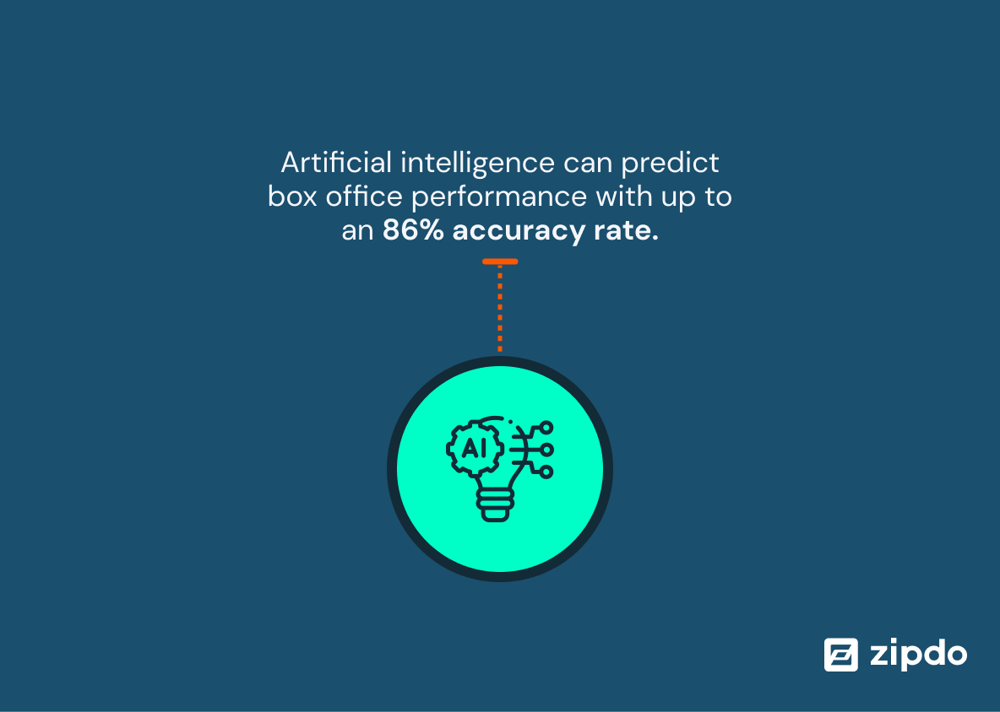

Conclusions April Bollinger, Asha Buchanan, Ryan Nguyen, Claire Desrosiers, and Nia Junod
Written by
Formal education on information privacy needs to be implemented in all public schools.
This change will
support a culture of data privacy consciousness. If Joan grew up in a world where information privacy was a
priority, she may have taken a second look at those terms and conditions. Streamberry Services might’ve
thought twice about deceiving subscribers if they thought they couldn’t get away with it. Kids K-12 are
vulnerable to data breaches. In a 2019 report published by the Code.org Advocacy Organization,
the Computer Science Teacher Association, and the Expanding Computing Education Pathways Alliance reported
that
only 45% of high schools in the United States teach computer science [1]. This is an unacceptable statistic
as it shows the increasing knowledge gap on a topic that will become increasingly important as time goes on.
Furthermore, a 2012 survey by the Pew Research Center found that 92% of American teens constantly post
photos of themselves and 82% share their birthdate [2]. A similar majority also share their school name,
hometown, and relationship status [2]. Pieces of personal information like the ones mentioned are common but
unacceptable uses for passwords, according to the National Institute of Standards and Technology [3]. For
these reasons, school-aged kids are especially susceptible to data breaches and need to be taught more
robust data
security.
[4]
Another reason this education reform needs to take place is that it has the power to reap generational
benefits. Access to the Internet is increasing every year. Of the
demographic researched, 48% said that the reason they do not have Internet access at home was simply because
they do not use it and were “not interested” [4]. We need to foster a culture of internet safety and culture
that is on pace with how fast internet accessibility is expanding.
[5]
Finally, the government needs to take a tougher stance on data privacy to protect its citizens. The United
States promotes an “opt out” system when it comes to data collection. This puts too much responsibility on
the individual user. This is a stance that prioritizes big tech over the well-being of its citizens. For
reference, the European Union is almost strictly “opt in” [5]. If the US continues this path of
prioritization, the least they could do is supplement with formal education beside basic math, science, and
English.
AI-generated content is changing the creative landscape in Hollywood
[9]
AI has the potential to greatly inhance our creative capabilities. AI can automate tasks that a repetative or
time consuming such as editing, this would remove the need for humans and allow creative professionals to
focus on innovative aspects of filmaking [8]. In 2023, about 20% of film is edited using AI [8]. AI also has
potential as a screenwriting tool. AI is making video production as easy as typing or speaking, filmmakers
are able to use AI programs like Storia to create detailed storyboards prior to production [6]. AI can be
used to analyze viewer preferences and viewing habits to assist writers and producers in creating content
that resonates with audiences.
Nearly 77% of repondents used AI image generators to enable faster landscape photos to screens to post
production [10]. Producers can now save money and improve effiecency by using generative AI to produce
virtual characters and environments [11].
[12]
There are ethical and economic implication with the use of AI that must be considered. AI could potentially
people to lose their jobs in special effects, animation, and even acting. By 2026, it is estimated that 20%
of all entertainment industry jobs - roughly 118,500 positions - will be lost to AI [10].
We also must consider the loss of artistic control and creativity that AI may cause [7]. We are trading the
authentic human touch in the creative process for the precision and efficiency of AI. Despite these
potential drawbacks of utilizing AI, investors have spent $50 billion on generative AI, however 90% of
startups only offer minor improvements [6].

[8]
AI can be used in a variety of ways. It can be used to create predictive success models, which can analyze
vast amounts of data from past film performances to predict box office success with greater accuracy.
Helping studios produce the best movies and films [8]. Warner Bros used AI predictions which had 70%
accuracy rate of predicting film performance [8]. Predictive AI can also be used to gather information
through social media and online reviews to gauge audience sentiments and preferences allowing producers to
tailor their content to viewer preferences [8]. Generative AI is transforming how we experience films
through Virtual Reality (VR) and Augmented Reality (AR). It enables the creation of adaptive and interactive
media, where viewers can step into virtual worlds crafted by AI algorithms [11]. These environments are not
only
immersive but also allow real-time interaction with characters and settings, providing a personalized
narrative experience that adjusts and evolves based on viewer responses [11]. AI tools are also
revolutionizing
the entertainment industry by enhancing the quality of visual effects. These advanced technologies enable
filmmakers to create highly realistic CGI that integers seamlessly with live-action footage, expanding the
boundaries of creativity [7]. This transformation allows for the depiction of intricate scenes–from
futuristic
cityscapes to epic space battles-making cinematic experience more immersive and visually striking for
audiences [7].
Societal biases sourced from the media significantly shape our view of others
[13]
Use of Social media is growing and as it grows so does it's influence on our lives and views of the world.
41% of Americans believe that use of
social media is increasing [13][14]. From January of 2023 to January 2024, the number of social media
accounts
grew by 8% - from 4.72 billion to 5.04 billion accounts [13][14]. Wider use of social media is not the only
thing growing. It's influence on our lives is also increasing. 70%
of teenagers check social media accounts multiple time a day and 24% have reported that they have been
negatively affected by it [15].
Social media is experiencing significant growth and as it becomes more relevent in people's lives, it has the
potential to impact us posititively and negatively. It shapes our views of others, perpetuates stereotypes,
reinforces inequalities, and influences our views of important topics and the people around us.
Social media can effect society negatively through perpertuating stereotypes. Anyone can say anything on the
internet with little to no consequences. This leads to misleading, untruthful, and harmful content. In July
2020, 58% of Americans stated that they belived that media reinforces harmful stereotypes [17]. 68% also
stated
that media is undermining stereotypes [17].
Impact of TV content on
perpetuating stereotypes in the United States as of March 2020 [17]
An example of this is a current ongoing TikTok trend called #Girlmath. The trend targets woman and helps
rationalize spending and making purchases with irresponsible logic [16].
For example, the idea that if you pay in cash you’re not spending real money or that if something cost less
than five dollars it is free [16]. This trend may have
started out as a joke however it promotes bad behavior and perpetuates the stereotype that women are more
immature and
less competent with finances than men [16]. A majority of the time the initial message of
these trends may not be apparent, appearing as only a joke, however the underlying implication can undermine
the groups that are targeted by these trends.
[18]
Social media can also affect the way we make decisions. Recent studies have found that 40% of people look to
social media for travel advice [18]. People also seek advice regarding other sectors icluding 25% in
financial,
22% in retail, 20% in healthcare [18]. Due to people's desire to seek out advice on social media, it is
easier
than ever to spread misinformation and manipulate people. A study found that 84% of people agree that media
made it easier to manipulate [19]. As use of social media continues to grow it is important to evaluate it's
impact on our decisions and the implications of misinformation regarding these decisions.
Sources
[1] 2019 State of Computer Science Education, (2019), Retrieved from https://advocacy.code.org/
[2] Brenner, Joanna, Part 2: Information Sharing, Friending, and Privacy Settings on Social Media, (Pew
Research Center, 21 May 2013),
www.pewresearch.org/internet/2013/05/21/part-2-information-sharing-friending-and-privacy-settings-on-social-media/,
Accessed 22 Apr. 2024
[3] Digital Identity Guidelines, (National Institute of Standards and Technology)
[4] Children’s Internet Access at Home, (National Center for Education Statistics 2023),
https://nces.ed.gov/programs/coe/indicator/cch, Accessed 22 Apr. 2024
[5] Turow, Joseph, et al. Americans Can’t Consent To Companies Use Of Their Data, (Annenberg School for
Communication at UPenn, February 2023), https://papers.ssrn.com/sol3/papers.cfm?abstract_id=4391134
[6] Daniel Zahler, Hollywood GPT: Five Ways AI is Reshaping Media and Entertainment, (Medium, 3/4/2024),
https://medium.com/@danielzahler/hollywood-gpt-five-ways-ai-is-reshaping-media-and-entertainment-d76c4650e43d
[7] Stewart Townsend, AI Film Production: Revolutionize Your Cinematic Process, (Linkedin, 3/1/2024),
https://www.linkedin.com/pulse/ai-film-production-revolutionize-your-cinematic-process-townsend-etuxc/,
(4/22/2024)
[8] Zipdo, Essential AI in Movie Statistics in 2024, (Zipdo), https://zipdo.co/statistics/ai-in-movies,
(4/22/2024)
[9] Denis Green, Generative AI in Movies Market Present Development Strategy, And Growth Opportunities 2023
To 2032, (LinkedIn, 8/7/2023),
https://www.linkedin.com/pulse/generative-ai-movies-market-present-development-strategy-denis-green/
[10] Winston Cho, The HollyWood Jobs Most at Risk From AI, (HollyWoodReporter, 1/30/2024),
https://www.hollywoodreporter.com/business/business-news/ai-hollywood-workers-job-cuts-1235811009/,
(4/23/2024)
[11] MarketResearch, Generative AI in Movies Market By Type (Content Generation, Visual Effects,
PostProduction & Editing, Budget Optimization, Audience Engagement, and Creative Inspiration,
(MarketResearch, 8/2023), https://marketresearch.biz/report/generative-ai-in-movies-market/, (4/23/2024)
[12] Nicolas Bebahani, Job losses due to Generative AI will be lower than many expect, and influence will far
outweigh job cannibalization, (LinkedIn, 9/12/2023),
https://www.linkedin.com/pulse/job-losses-due-generative-ai-lower-than-many-expect-far-behbahani/,
(4/27/2024)
[13] Jeffery Gottfried, Naomi Forman-Katz, More Americans Now See The Media’s Influence Growing Compared With
a Year Ago, (May 17th, 2021),
https://www.pewresearch.org/short-reads/2021/05/17/more-americans-now-see-the-medias-influence-growing-compared-with-a-year-ago/,
(April 24th, 2024)
[14] Dave Chaffey, Global Social Media Statistics Research Summary 2024, (Feb 1st, 2024)
https://www.smartinsights.com/social-media-marketing/social-media-strategy/new-global-social-media-research/#:~:text=A%20summary%20of%20global%20social,rest%20of%20the%20year%E2%80%A6,
(April 25th, 2024)
[15] Bright Futures, 70+ Social Media and Mental Health Statistics(2023), (Oct 2nd, 2023), https://www.brightfuturesny.com/post/social-media-and-mental-health-statistics#:~:text=24%25%20of%20teenagers%20say%20social,themselves%20in%20a%20certain%20way, (April 25th, 2024
[16] Pam Rutledge, Jokes that Infantilize Women and Glorify Irresponsible Spending Aren’t Funny, (Sep 18th, 2023), https://www.fielding.edu/girlmath-how-social-media-trends-perpetuate-stereotypes/, (April 25th, 2024)
[17] Julia Stroll, Impact of TV Content on Perpetuating Sterotypes in the US as of March 2020, (Mar 9th, 2021), https://www.statista.com/statistics/1136068/media-reinforces-stereotypes-in-us/, (April 24th, 2024)
[18] Marcia W. DiStaso, Tina McCorkindale, The Science of Influence: HOW SOCIAL MEDIA AFFECTS DECISION MAKING IN THE HEALTHCARE, TRAVEL, RETAIL AND FINANCIAL INDUSTRIES, (Dec 11th, 2017), https://instituteforpr.org/science-influence-social-media-affects-decision-making-healthcare-travel-retail-financial-industries/, (April 25th, 2024)
[19] Richard Wike, Larua Silver, Janell Fetterolf, Christine Huang, Sarah Austin, Laura Clancy, Sneha Gubbala, Views of Social Media and Its Impacts on Society, https://www.pewresearch.org/global/2022/12/06/views-of-social-media-and-its-impacts-on-society-in-advanced-economies-2022/, (April 24th, 2024)